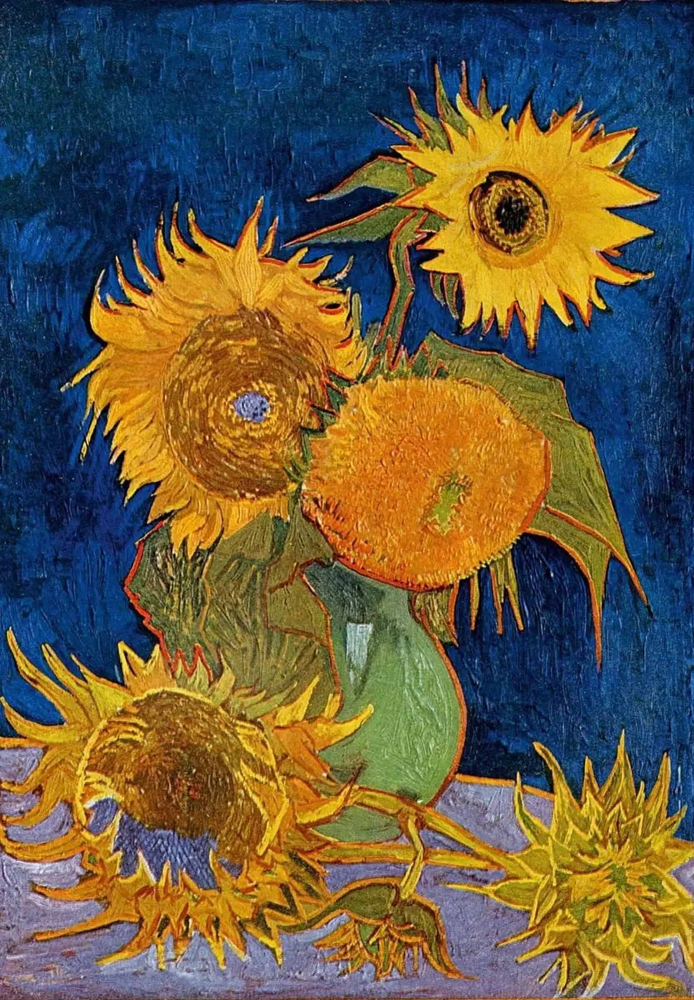
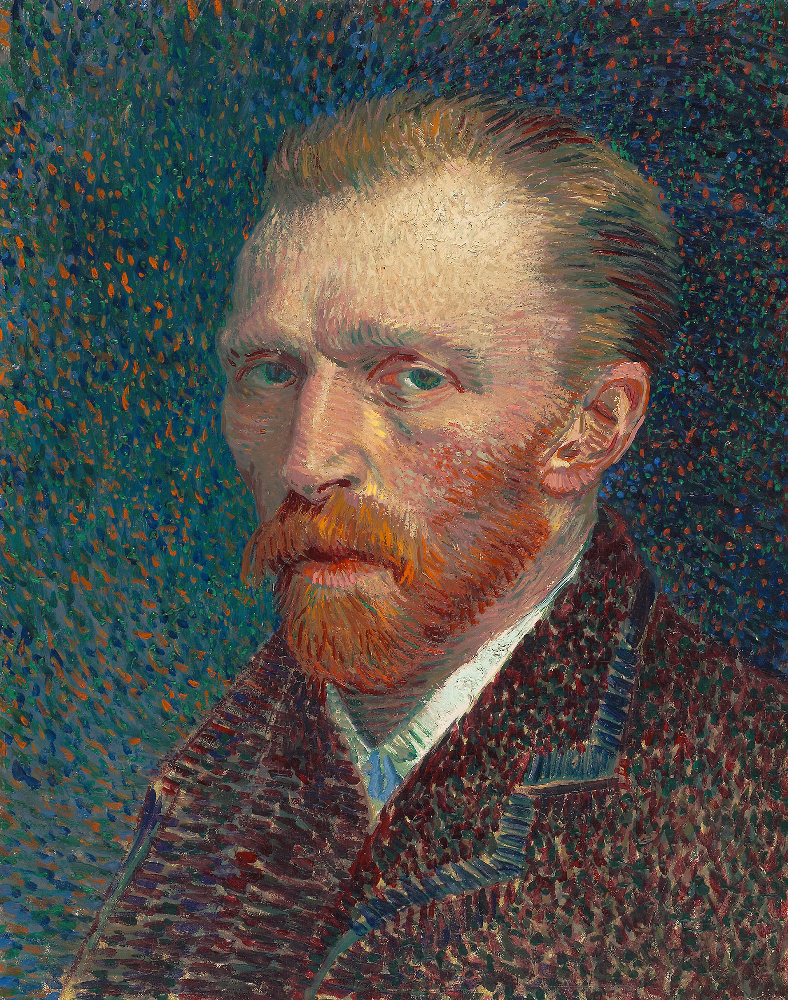
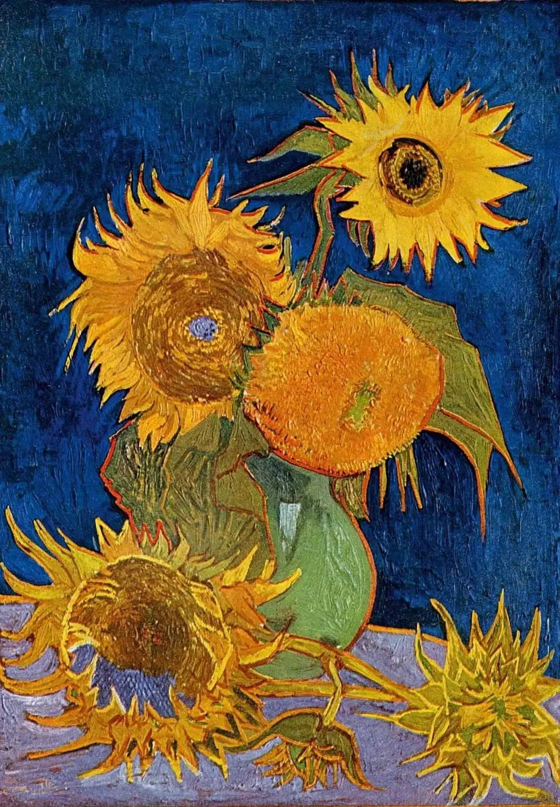
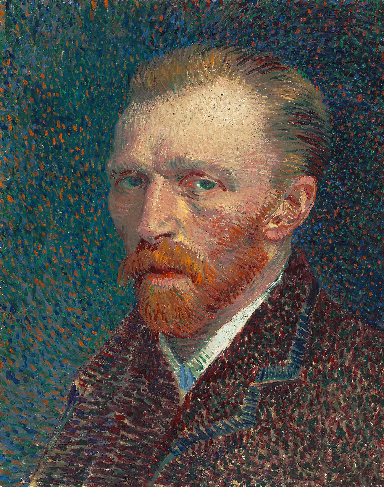

Biografía

Vincent van Gogh (1853-1890) fue un pintor neerlandés postimpresionista, conocido por su uso expresivo del color y la pincelada. Su obra ha influido profundamente en el arte moderno.
Obras Famosas
- La noche estrellada (1889)
- Los girasoles (1888)
- Autorretrato (1889)
- El café de noche (1888)
Galería
 


